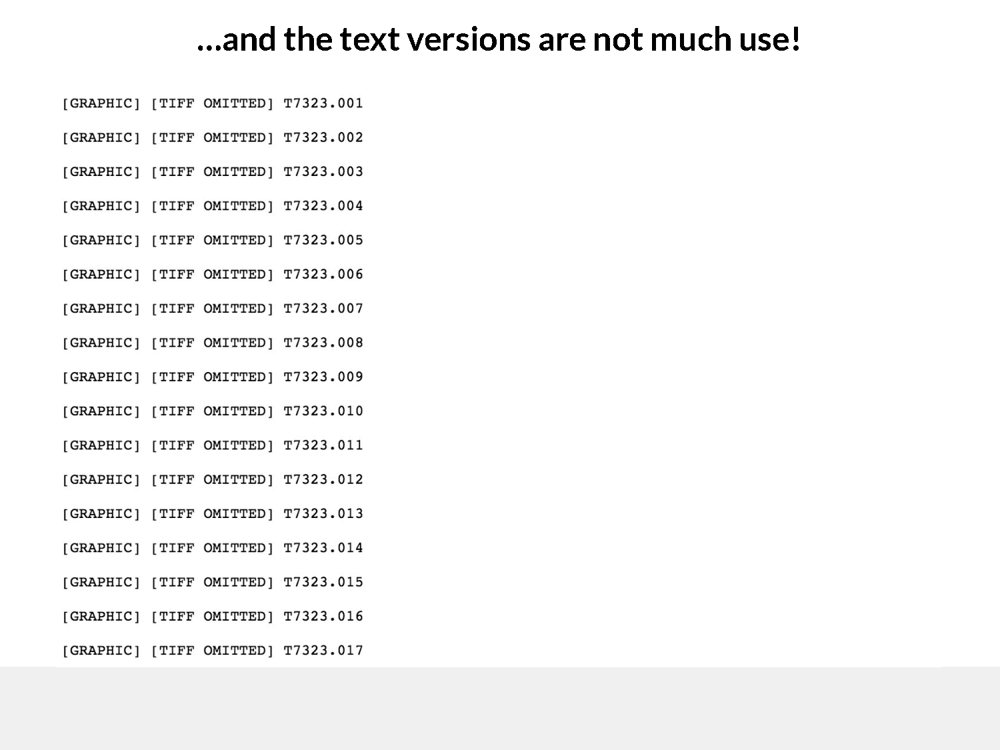

Why this is broken today
(two concrete examples)
The problem is not abstract. It is structural and repeatable.
Below are two representative cases, adapted directly from real government publications.
Example 1: US Senate investigation into the financial crisis
This report is one of the primary sources behind major journalism on the 2008 financial crisis — including revelations about subprime mortgage packaging and ratings-agency failures.
Yet accessing it is surprisingly difficult.
What actually happens today:
-
You must first locate the correct Senate subcommittee website (not easy).

Screenshot from the Senate subcommittee website -
There is no simple search; you must know which Congress the report belongs to. The listing of reports itself is a PDF.

The report listing is itself a PDF -
That PDF contains links — some of which are broken or unreliable.

Links within the PDF are often broken -
Eventually, you reach multiple PDFs, split across volumes, each close to 100MB.

Reports split across multiple massive PDFs -
The text versions are often unusable or incomplete.

Text versions are incomplete or broken
At the end of this process, you may technically "have the report", but it is still:
- • hundreds of pages long,
- • difficult to search,
- • impossible to link to precisely,
- • frustrating to use on anything other than a desktop.
This is not a niche failure. It is typical.
Example 2: The Saville Inquiry (UK)
The Saville Inquiry examined the killing of civilians on Bloody Sunday — a matter of profound historical and political importance.
At first glance, it looks better served.

But once you try to use it:
-
The "reports and statements" page contains no real links. Page numbers are plain text, not navigable. Downloads are opaque and fragmented.

Page numbers are plain text, not clickable links -
Alternative formats require emailing the National Archives.

Must email for alternative formats
Again, the issue is not the absence of information, but the absence of usable access.